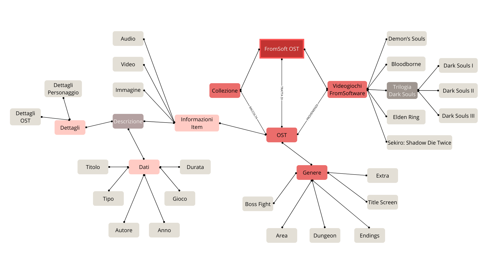
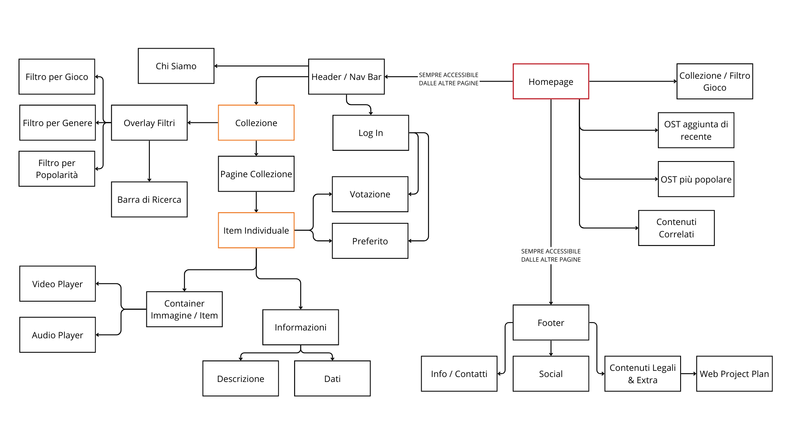
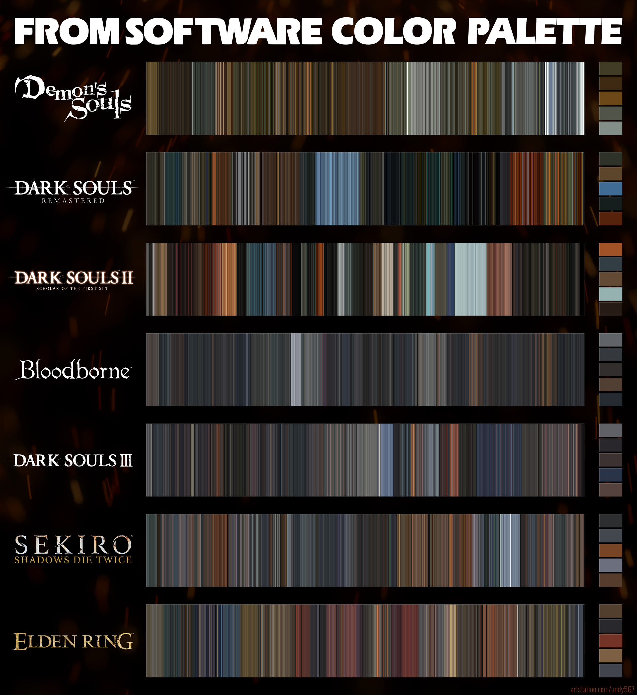

WEB PROJECT PLAN
IDEA
L’ idea consiste nel realizzare una collezione digitale e allo stesso tempo una galleria, contenente le OST di parte dei giochi della casa di sviluppo FromSoftware.
BRIEF
1 .1 Finalità e obbiettivi del progetto
Lo scopo del sito è di raggruppare in un unico ambiente dedicato le OST delle varie serie videoludiche di FromSoftware. Ciò esclude, almeno nell’idea iniziale, la presenza di tracce al di fuori di tale casa.
Più in dettaglio, le ost presenti appartengono al mondo “Soulsborne” il quale comprende i giochi del genere souls (introdotto con gli omonimi titoli Demon’s Souls -2009- e Dark Souls -2011) assieme ai “fratelli” Bloodborne, Sekiro:Shadow Die Twice, Elden Ring”.
Come da idea, il sito vuole essere, oltre che un archivio digitale, lettearlmente una collezione ed una galleria. Allo stessemo modo di come possa essere possedere una collezione fisica di dischi, si vuole dare all’utente la possibilità di accedere a tali tracce in maniera rapida e visiva, allo stesso modo in cui fisicamente si sceglie qualcosa da ascoltare per la prima volta basandosi sulla copertina (di un album o di una canzone)
Contemporaneamente, si vuole ridurre al minimo la presenza di scritte, testi intrusivi o menù complessi e labirintici. Si vuole fornire l’esperienza che si avrebbe possedendo tale collezione fisicamente, la quale si desidera anche esporre magari in una vetrina.
Le tracce inoltre, a livello di pagina dell’itema, presenteranno anche una breve descrizione della traccia e del soggetto, come le emozioni scaturite, gli obbiettivi del compositore, gli strumenti, chi è il soggetto trattato nella ost ed il suo scopo nella trama. Tali descrizioni non vogliono essere un’ enciclopedia e nemmeno una guida al gioco ma un semplice aiuto per l’interpretazione e lettura della traccia, allo stesso modo in cui in un museo, sotto un quadro esposto, vi è una breve descrizione.
Infine, per migliorare l’esperienze e l’immersività, si propone, sempre nella pagina item, uno sfondo rappresentatitvo e, se l’utente lo desidera, un video che può far partire, a sostegno dell’ascolto e della comprensione. (ad esempio, se la traccia è la ost di una boss fight, il video riguarderà il combattimento con tale boss).
1 .2 Pubblico di riferimento
Il target di tale sito non è specifico, chiunque può accedervi. Non ci sono vincoli d’età o genere. Dato però il tema, è chiaro che il focus sarà sugli appassionati di videogiochi e musica (in particolare appassionati dei giochi trattati). Non si vuole precludere però l’accesso e chi non fa parte di nessuno di questi gruppi. Anche chi è capitato sul sito per caso (ad esempio, ascoltando per caso una ost su siti come youtube, per poi cercare altre, si è trovato tale sito) può trovare in tale sito un'opportunità per scoprire nuove colonne sonore, approfondire il proprio interesse per la musica videoludica o semplicemente esplorare un archivio di brani iconici. L'obiettivo è offrire un'esperienza accessibile e coinvolgente, indipendentemente dal livello di familiarità con i giochi trattati o manualità tecnologica
1 .3 Accesso alla risorsa
L'accesso sarà principalmente tramite sito web, da browser, e futuramente anche tramite app, senza vincoli di piattaforma o strumento (pc, smartphone, tablet ecc) e non richiederà nessun accesso obbligatorio. Sarà possibile però creare un account in modo da poter rimanere aggiornati su nuove pubblicazioni, aggiungere tracce ai preferiti per un più comodo accesso, votare ciò che si ascolta in modo da creare una classifica pensata per filtrare la collezione e fornire, anche a chi non è esperto dell’ambiente, la possibilità di trovare immediatamente i brani più popolari e ciò che piace alla comunity.
Il media principale per la comunicazione ed esplorazione della collezione prevede immagini, video ed audio con enfasi sull’accessibilità e facilità d’uso (anche da cellulare o schermi piccoli)
BENCHMARK
2 .1 Analisi di mercato
Attualmente siti che trattano esclusivamente colonne sonore FromSoftware non ce ne sono o sono molto difficili da ritrovare . I più simili e vicini all'argomento trattato sono più generici, che comprendono raccolte di vari videogiochi ed opere come “KHInsider, VGMusic OverClocked ReMix, ” oppure siti di E-commerce in cui vendere le colonne sonore fisicamente quali “Discogs, FromSoftware o Bandai- ufficiali”. Ci sono infine le sempreveredi piattaforme come Youtube, Spotify, SoundCloud ma che non offrono l’esperieza di una collezione. Sempre legati all’argomento FromSoftware ci sono anche siti e content creator che trattano l’argomento, sotto forma di gameplay, guide e wiki ma che hanno poco a che vedere con le tracce musicali nello specifico oppure canali che trattano di musica o reaction che, oppositamente, non sono legati esclusivamente all’ambiente FromSoftware.
I siti più simili all’idea trattano l’argomento genericamente o solo marginalmente, tralasciando uno o l’altro aspetto. Non aiuta il fatto che molti di questi siti sono molto datati (VGMusic ad esempio è del 1996) con layout molto antiquato, elementi non aggiornati e che spesso non sono pensati per l’utilizzo da mobile o più semplicemente con schermi diversi.
Per questo motivo, l’esistenza di un sito, che raccoglie in un solo luogo tali mondi, possa portare nuove persone a conoscere ognuno l’altro, con elementi moderni, facile da utilizzare, che possa attirare subito l’occhio e sia responsive ed indipendente dalla piattaforma.
2 .2 .1 Servizi
Tali siti utilizzano per la maggior parte un’interfaccia molto caotica e piena di elementi, per lo più testuali e ipertestuali con molta enfasi sul alto database e poco attraente dal lato visivo. Si concentrano molto sul categorizzare le opere, principalemente per gioco, piattaforma (ad esempio Switch, PS1, PC..), compagnia videoludica (Sony, Nintendo, Sega…), alfabeticamente (tramite filtri), per data o tramite semplice ricerca.
Presentano anche elementi social, permessi dal possedere un account, che consentono di lasciare commenti, favorire tracce, creare playlist e altro.
Per alcuni è anche presente la possibilità di scaricare ciò che si ascolta.
2 .2 .2 Elementi ripresi ed inediti
Alcuni elementi ripresi per il progetto sono i filtri di ricerca per gioco, genere e comunity (poplarità), la sezione della descrizione del brano ed i dati, un video player da supporto al alto audio (ma che non deve essere il focus).
Elementi invece inediti o marginalmente presenti negli altri siti che sono stati utilizzati sono il prevalente utilizzo di immagini dedicate ai brani piuttosto che testi, focus sull’accessibilità e facilità d’uso su qualsiasi piattaforma, lato comunity meno social, ma più di sostegno, che permette il voto e le preferenze a scopo di filtro per i neofiti. L’utilizzo di colori inoltre è stato scelto appositamente, assieme al font, per riprendere i titoli trattati.
Infine, si è voluto riprendere la possibilità di “promozione” da alcuni di questi siti, mettendo in mostra canali, siti e persone che si occupano di tale mondo.
2 .3 Concorrenti
3 .3 .1 KHInsider
Il sito presenta un layout esclusivamente verticale, con l’assenza di un header o footer. Il logo situato nella sidenav che funge anche da sezione filtri per il sito e modalità di accesso al proprio account. Il resto del corpo del sito è formato per la maggior parte da una lunga lista delle ultime aggiunte. Alla collezione completa si arriva tramite il filtro “Browse All” degli album. Visivamente è molto datato, con colori principalmente azzurro per la sidenav e grigio per il body (oppure blu e nero nella modalità scura) e una predominanza di elementi testuali.
Il lato visino è molto scarno, con le immagini relativi ai giochi o alle ost molto ristrette. I filtri e la ricerca sono efficaci, e la pagina della collezione completa è facilmente accessibile, ma il fattore database, nuovamente rovina l’esperienza a chi cerca qualcosa di più immediato. Infatti, una semplice ricerca per titolo, ad esempio “Dark Souls” mostra molte risposte dato che viene fornite un risultato per ogni volta che tale album sonoro è stato rilasciato, portando confusione ai meno esperti chiedendosi se ci sono differenze.
Anche le pagine degli item sono molto spoglie con attenzione sulla funzionalità. Le informazioni (metadati) sono per lo più presenti e comprensivi. Molto utile la funzione per il download o la sezione correlati, che mostra gli album più ascoltati dagli appassionati che hanno visitato l’item attuale.
3 .3 .2 OcRemix
Il sito ha uno stile più moderno del precedente, con colori più accesi che attirano subito l’occhio, come l’arancione, blu e bianco. Il layout è più pulito ma rimangono comunque molto presenti gli elementi testuali e ipertestuali. Sono presnti sia l’header (che comprende oltre il logo, anche la navigazione e il lato social) ed il footer.
Il corpro principale è composto a destra da una sidebar, che mostra gli ultimi singoli rilasciati, e per il resto da varie sezioni che forniscono una preview di alcuni item (tramite slideshow), della comunity e della collezione.
E’ possibile tramite la navigazione nel header accedere alla collezione filtrando anche per gioco, musica o persone (autori). Il sito permette inoltre, dato il focus dei “Re Mix”, la possibilità a chiunque di caricare sul sito le loro creazioni.
Cercando tramite barra di ricerca, ad esempio, “Dark Souls” si ottiene una lista di item che comprendono tale titolo nel nome (gioco di base da cui sono remixati i brani) ma che non permettono la rapida comprensione dell’elemento dato nuovamente il focus sul testo (anche se l’elemento cercato è evidenziato), ma ciò che distingue veramente i singoli item (titolo proprio o un’immagine) sono messi in seconodo piano.
Le pagine item dei brani presentano un videoplayer per visualizzare il brano ma è completamente staccato dalla traccia ed è più un elemento visivo si sfondo o pubblicitario verso il sito stesso. Molto utile. anche in queto caso, la funziona download, e la presenza di di una ricerca per tag, in modo da trovare tracce simili a quella che sis ta scoltando.
Molto dettagliata anche la sezione dei dati, situata nella tendina Details e la sezione comunituy, che permette oltre ai soliti commenti, anche la possibilità dell’autore di scrivere informazioni aggiuntive sulla creazione del brano a formare una sorta di “descrizione”.
STRUTTURA
3 .1 Mappa concettuale
3 .2 Schema dipendenze
3 .3 Categorie
| Categoria | Descrizione |
|---|---|
| DC.title | Titolo Sito |
| Titolo Opera / Traccia | |
| DC.Creator | Creatore Sito |
| Autore Traccia | |
| DC.Subject | Argomento Sito |
| Argomento Traccia | |
| DC.Publisher | Fornitore / Web hosting |
| DC.Date | Data creazione sito |
| Data rilascio traccia | |
| DC.Type | |
| Video | |
| Immagini | |
| Audio | |
| Testo | |
| DC.Format | |
| .html | |
| .css | |
| .js | |
| .jpg | |
| .png | |
| .mp3 | |
| .mp4 | |
| DC.Identifier | Link pagina sito |
| Link pagina item | |
| DC.Language | Lingua del sito: IT |
| DC.Rights | Diritti e licenza |
| data-gioco | |
| Demon’s Souls | |
| Dark Souls I | |
| Dark Souls II | |
| Dark Souls III | |
| Bloodborne | |
| Sekiro | |
| Elden Ring | |
| data-genere | |
| Boss Fight | |
| Ambientale / Zona | |
| Endings | |
| Title Screen | |
| Dungeon | |
| Extra / Cut Content | |
| data-durata | Minuti / Secondi |
LAYOUT
4 .1 Layout
4 .2 Wireframe
USABILITA'
5 .1 Architettura
L’architettura del sito è progettata per garantire una navigazione intuitiva e una struttura logica dei contenuti.
In tutte le pagine è presente sia la sezione header, comprensivo di logo (dal quale si può ritornare sempre alla homepage), una sezione per la navigazione e la sezione per il log in, sia il footer con tutte le informazioni utili come i contatti, i social e i diritti.
La home page funge, come dai giochi a cui è ispirata, da hub centrale. Non vi è un sistema di navigazione immediato ma è più uno strumento visivo. Il corpo principle della homepage è diviso in varie sezioni, facilmente distinguibili, e interattive al passaggio del mouse. Tramite un sistema di card, composto da immagini e overlay, al passaggio del mouse, che mostra informazioni aggiuntive, si può giungere alla collezione, ad item specifici o a scoprire siti esterni correlati.
Le sezioni nella hompage sono costituite da flex box, che permettono un’adattabilità responsiva al cambiamento dello schermo, in base alla disposizione in colonna o riga.
Tramite la barra di navigazione si giunge alla pagina della collezione, la quale, data la sua funzione, è composta a schermo da una sola parte: una grid box per l’esposizoine dei vari elementi ed un sistema di paginazione. Sempre tramite passaggio del mouse, con overlay, è possibile ottenere informazioni aggiuntive sui singoli item, permettendo inoltre il click immediato (o tocco da dispositivi mobili) sull’elemento per accedere alla pagina specifica.
Questa volta è presente un sistema di navigazione. Tramite un pulsante (button) in parte fuori dall schermo, che mostra inizialmente solo l’icona della lente d’ingrandimento (in modo che sia comprensibile dato il vasto utilizzo di tale icona per questa funzione), è possibilme, sempre tramite hover, mostrare il pulsante intero che, se premuto, fa comparire una full-screen navigation. Essa è composta da un sistema di ricerca primario, dove basta digitare il nome dell’elemento che si desidera, e la lista in sottfonodo si aggiorna automaticamente, e un sistema di filtri per gioco, genere e comunity. Sia in questa pagina che nella home page, vi è un pulsante per ritornare in cima, che compare dopo avere navigato un po’ nella pagina.
Tali elementi (pulsanti) sono stati inseriti in maniera non invasiva (ma comunque fixed) in modo da mettere in risalto l’elemento visivo degli item. Nello stesso modo è stata pensata anche la barra di scorrimento laterale, la quale, adottando sempre uno stile interattivo di hover, scompare al rimpiciolirsi dello schermo in modo da non limitare lo spazio disponibile.
Infine, si giunge all’elemento item. Il suo corpo è composto principalmente da due contenitori. Un contenitore è adibito ai media, ovvero il video-player (sul quale non è permesso fare altro se non metterlo in pausa o farlo partire) e audio-player, con sfondo un’immagine relativa alla ost in ascolto, mentre il secondo contentenitore comprendere dei collapsible per la descrizione ed i dati (a loro volta formati da una tabella).
La pagina item comprende però, anche le breadcrumbs come navigazione, in modo fornire all’uttente, magari meno esperti dell’argomento, un modo per riconoscere in che sezione / gioco si stanno trovando, in qualsiasi item stiano navigando.
Infine, tramite una flexbox, è presente un sistema di voto e preferenze, tramite click sulle icone nel caso l’utente sia collegato altrimenti fa comparire da fuori schermo, un messaggio di avviso / notifica che bisogna collegarsi.
I layout sono stati pensati per la rapidità d’utilizzo, l’impatto visivo e l’accessibilità indipendentemente dalla grandezza dello schermo, favorendo un numero limitato di elementi a schermo in ogni sezione piuttosto che un sovraffollamento.
5 .2 Aspetto e tipografia
Lo stile utilizzato è moderno e minimale, con pochi elementi, soprattutto testuali, per favorire la navigazione da qualsiasi piattaforma senza richeidere all’utente di leggere numerose righe di testo o doverne inserire in delle textbox. Gli elementi d’interfaccia utilizzati principalmente sono la navbar, pulsanti leggermente arrotondati e le immagini, con un feedback e interazione al passaggio del mouse di overlay, ingrandimento, zoom, cambio colore e persino transizioni (il più fluide possibile) e notifiche.
5 .3 Colori, icone e font
I colori principali del sito seguono quelli più comuni nella palette cromatica dei giochi di from software con un uso predominante del bianco e nero per i contrasti, varie sfumature di grigio e con degli elementi interattivi con un colore rosso scuro / marrone. Lo sfondo è stato creato usando questi colori, assieme anche alla barra di scorrimento, tramite una sfumatura, chiara ai bordi e scura al centro, per mettere in risalto gli elementi e dare una linea di lettura della pagina, in modo da guidare l’attenzione verso il centro.
#838E88 (grigio chiaro) / #43484E (grigio medio) / #322E2D (grigio scuro) / #56220C (rosso-mattone) / #823E21 (rosso-mattone chiaro)

A tale scopo le scritte sono per la maggior parte bianche per favorirne la lettura, con una dimensione abbastanza elevata per i titoli e più piccola per gli elementi come le descrizioni o la tabella dei dati. Il font utilizzato è “OptimusPrinceps” che segue lo stile di molte opere, come la trilogia dark souls, nonché lo stile fantasy medioevale che funge da base per le opere.
SERVIZI
6 .1 Browsing aggiuntivo
Oltre ai tradizionali canali di navigazione, è possibile introdurre funzionalità avanzate per migliorare l’esperienza utente e facilitare l’esplorazione della collezione di colonne sonore.
Una delle soluzioni è l’integrazione di Playlist Dinamiche, che vengono generate automaticamente in base a temi specifici, come battaglie contro i boss, ambientazioni silenziose o momenti particolarmente drammatici. Questo sistema permette agli utenti di immergersi in un’esperienza d’ascolto coerente con le proprie preferenze o il proprio stato d’animo.
Un altro strumento utile è la Tag Cloud, un sistema di navigazione basato su parole chiave che si adattano dinamicamente in base alla loro rilevanza. Le etichette più utilizzate o ricercate verranno visualizzate in dimensioni maggiori, facilitando un’esplorazione immediata e intuitiva delle OST disponibili.
Infine, per offrire un’esperienza ancora più personalizzata, si può implementare un sistema di Suggerimenti Basati sull’Ascolto, che utilizza un algoritmo per proporre tracce simili a quelle già cercate o riprodotte dall’utente. Questo strumento consente di scoprire nuove OST affini ai propri gusti, rendendo la fruizione del catalogo più ricca e coinvolgente.
6 .2 Utilities e tool per la navigazione
Per migliorare l’esperienza di navigazione e valorizzare l’accesso alle colonne sonore, è possibile integrare diversi strumenti interattivi.
Uno di questi è l’Audio Preview Player, un lettore integrato che consente di ascoltare un’anteprima delle OST senza la necessità di aprire la pagina dedicata. Questo permette agli utenti di valutare rapidamente una traccia prima di accedere ai dettagli completi.
Un altro strumento essenziale è la Modalità Notturna, un’interfaccia a tema scuro progettata per migliorare la leggibilità e creare un’atmosfera più immersiva, riducendo l’affaticamento visivo durante l’ascolto prolungato.
Per garantire una maggiore personalizzazione, si prevede l’implementazione di un sistema di Download e Creazione di Playlist Personalizzate, che consente agli utenti di selezionare le proprie OST preferite, organizzarle in playlist tematiche e scaricarle per un ascolto offline.
Un ulteriore elemento di valorizzazione dell’accesso è la Soundtrack Timeline, un’interfaccia interattiva che visualizza le colonne sonore nel contesto della progressione del gioco. Attraverso questa funzionalità, l’utente può identificare il momento esatto in cui una traccia viene riprodotta all’interno del titolo di riferimento, comprendendone meglio il significato narrativo e l’impatto emotivo.
Per incentivare l’esplorazione del catalogo, è possibile integrare un Generatore di OST Casuali, che permette di riprodurre una traccia in modo casuale. Questa funzione può essere arricchita con filtri specifici, come la selezione di brani legati esclusivamente alle battaglie contro i boss, alle aree di gioco o ai momenti particolarmente evocativi, offrendo agli utenti un’esperienza di scoperta più dinamica.
Infine, la Modalità Immersiva Full-Screen consente di trasformare il sito in un vero e proprio lettore musicale a schermo intero, con la possibilità di integrare sfondi dinamici ispirati ai giochi. Questa funzione mira a rendere l’ascolto più coinvolgente, creando un ambiente adatto sia alla concentrazione che al relax.
6 .3 Strumenti di valorizzazione
Per migliorare ulteriormente l’esperienza di fruizione delle colonne sonore, è possibile integrare strumenti e funzionalità avanzate che arricchiscano l’accesso ai contenuti e favoriscano l’esplorazione dell’archivio musicale.
Un primo elemento chiave è l’integrazione con Spotify e YouTube, che consente agli utenti di ascoltare versioni ufficiali o orchestrali delle OST direttamente dalle piattaforme di streaming, offrendo un accesso immediato a esecuzioni alternative e di alta qualità.
Per mantenere il pubblico aggiornato sulle nuove aggiunte, è possibile implementare un sistema di notifiche per nuovi contenuti, che avvisi gli utenti tramite email o notifiche del browser ogni volta che vengono pubblicate nuove colonne sonore o aggiornamenti rilevanti.
Un’idea innovativa è l’inserimento di Easter Eggs e contenuti sbloccabili, come concept art inediti o interviste ai compositori, accessibili solo dopo aver esplorato determinate OST. Questo meccanismo incentiva l’interazione e rende la piattaforma più coinvolgente.
Per offrire una navigazione più approfondita, si possono introdurre filtri avanzati, che permettono di esplorare le OST in base a criteri specifici, come lo strumento musicale predominante, il tempo della composizione o l’intensità emotiva del brano.
Infine, per arricchire ulteriormente l’esperienza d’ascolto, ogni colonna sonora potrebbe includere una sezione dedicata all’integrazione con il lore, offrendo dettagli sul contesto narrativo e il significato della traccia all’interno del gioco. Questo permetterebbe agli utenti di comprendere meglio il legame tra musica e storia, valorizzando l’impatto emotivo di ogni composizione.
BIBLIOGRAFIA
Di seguito sono elencate le fonti utilizzate per la realizzazione del progetto, suddivise per tipologia di contenuto.
7 .1 Testi - descrizioni ost
Intelligenza artificiale e conoscenze proprie. Poca presenza di tali informazioni in rete.
7 .2 Immagini ed eventuali risorse multimediali
Immagini, principalmente fanart, da siti come ArtStation e WallpaperAbyss, video da canali youtube come Shirrako, BossFightDatabase, CrestfallenYT, Ivarov023 e file audio da KHInsider
7 .3 Strumenti e tool utilizzati
Software di sviluppo web: HTML, CSS, JavaScript per la realizzazione della piattaforma.
Framework e librerie: https://cdnjs.cloudflare.com/ajax/libs/font-awesome/4.7.0/css/font-awesome.min.css
per le icone
Piattaforme di hosting: GitHub per la pubblicazione del sito.
Canva per le mappe e la struttura
Mirò per i Wireframes
7 .4 Applicazioni e componenti diverse
Link esterni a siti e canali youtube che trattano dell’argomento come inegrazione e curiosità:
FromSofware
FextraLife(Wiki di vari giochi molto conosciuta nella comunity)
Sabaku(maggiore esperto in Italia del mondo FromSoftware e molto conosciuto anche all’ester)
VaatiVidia(Probabilmente il canale youtube più conosciuto al mondo per quanto riguarda la lore, narrazione ed il mondo dei giochi From)